Galería
Momentos de nuestros talleres, charlas y encuentros con la comunidad.
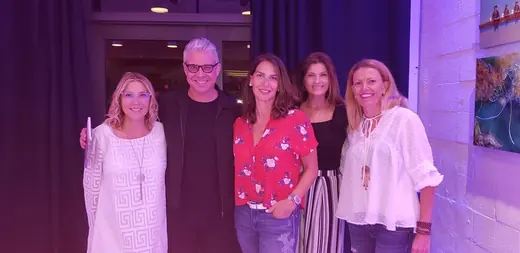
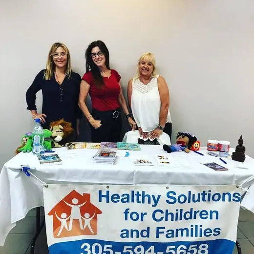
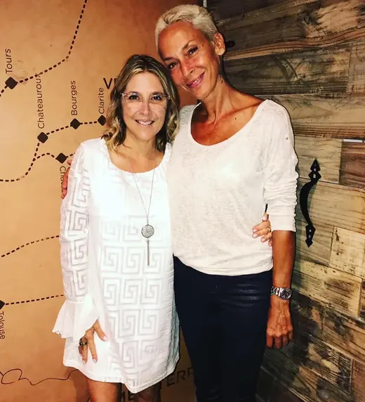
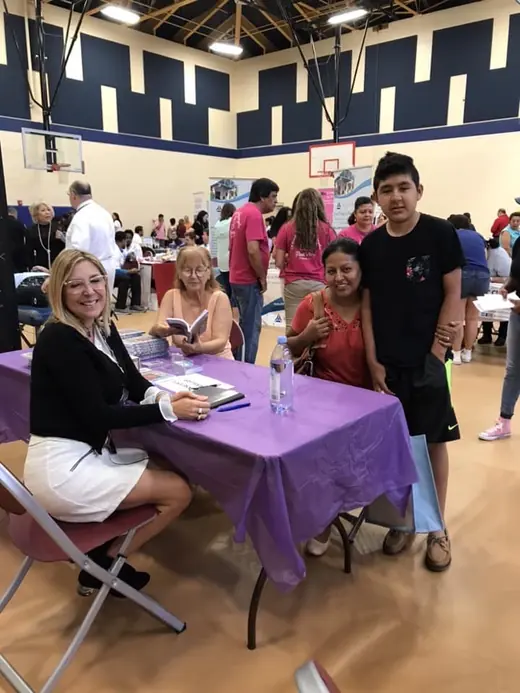
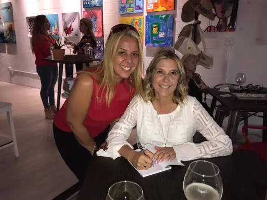
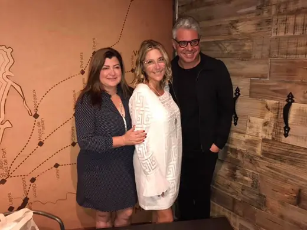
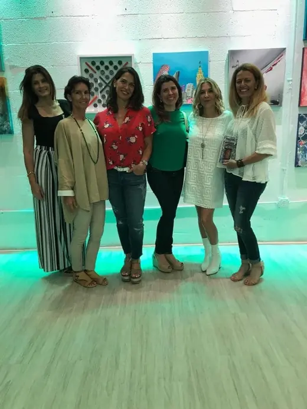
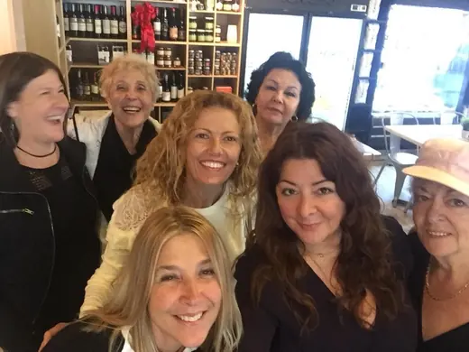
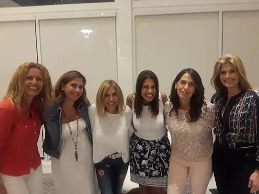
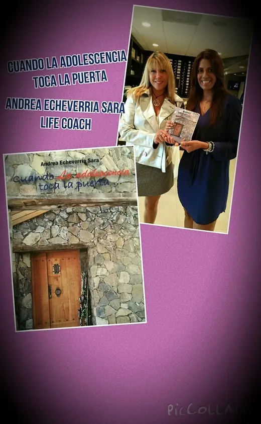
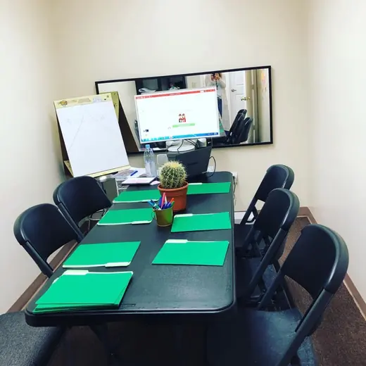
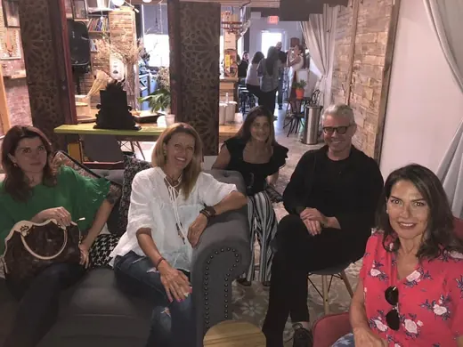
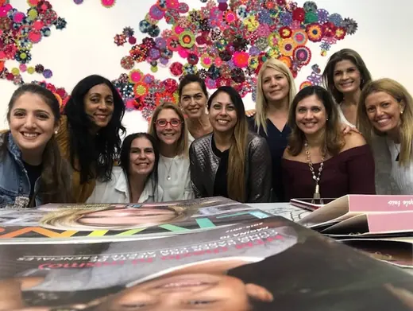
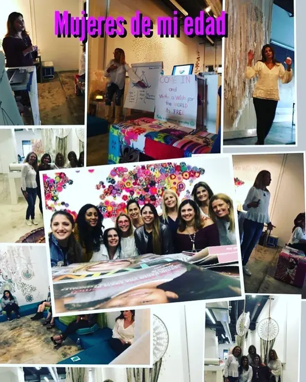
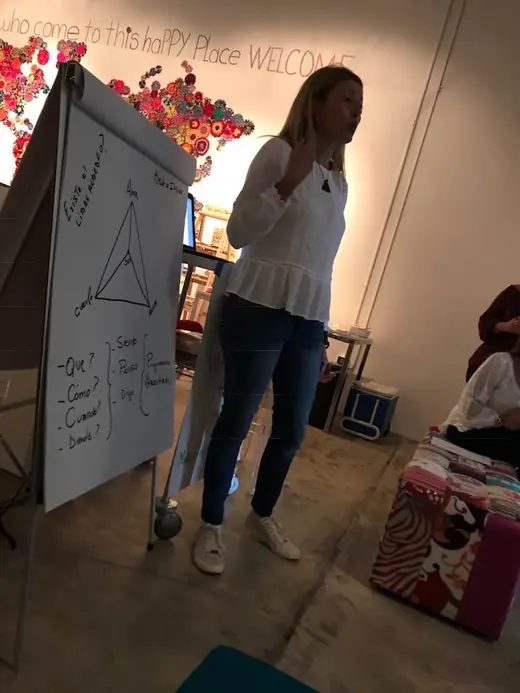
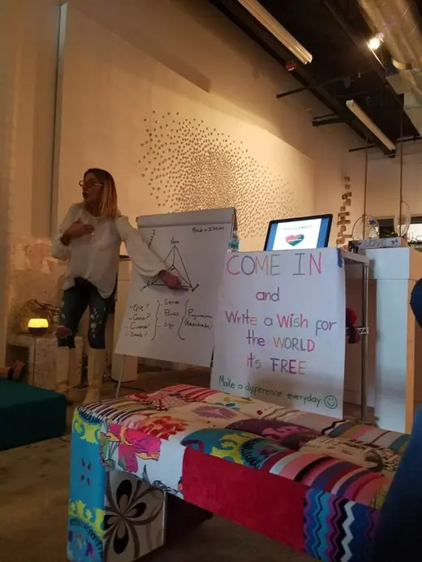
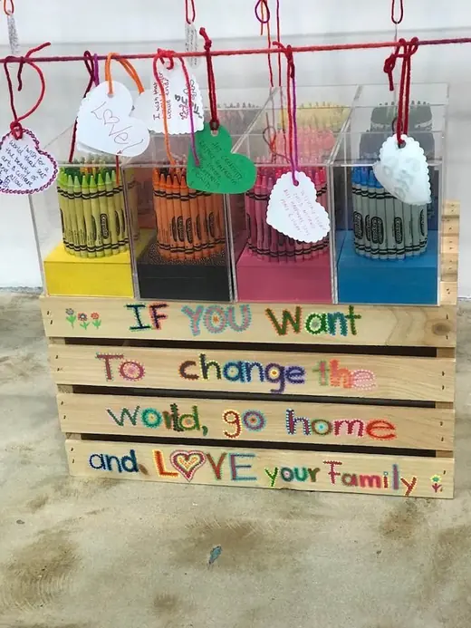
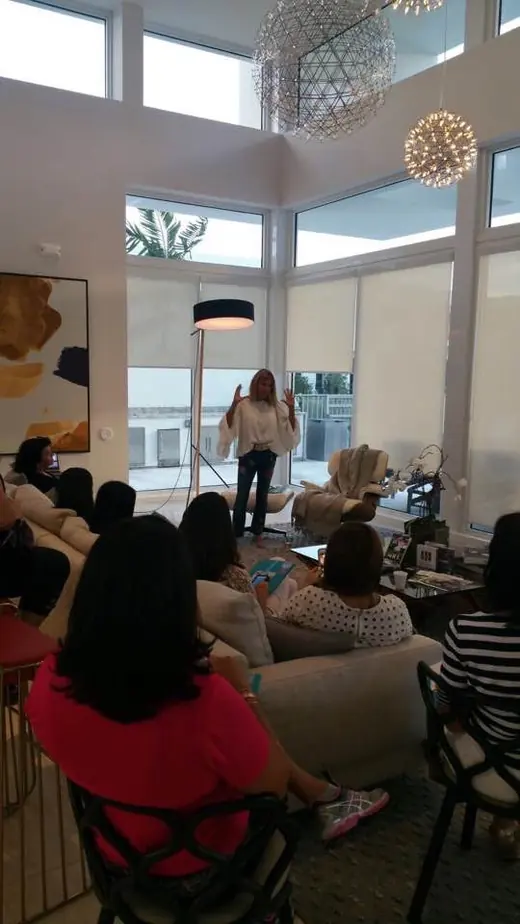
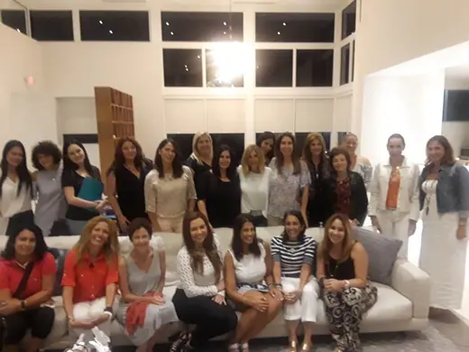
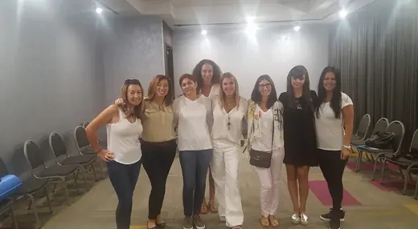
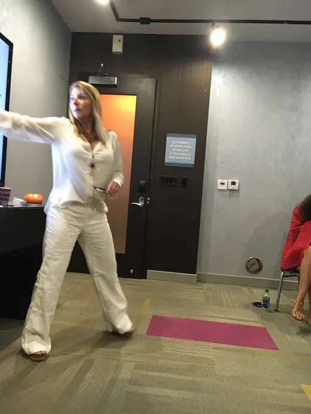
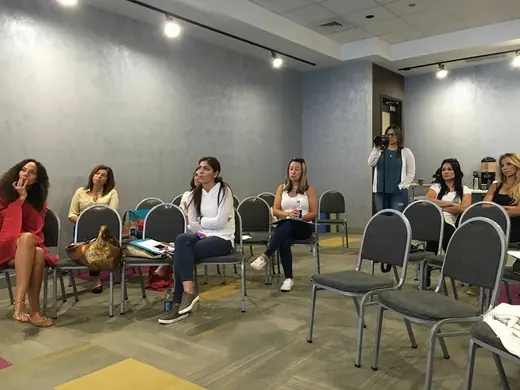
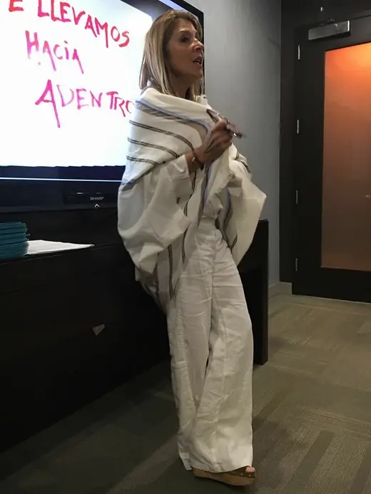
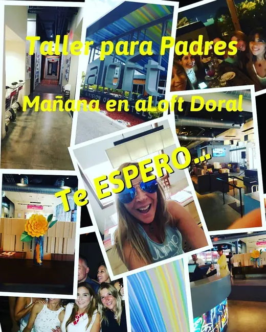
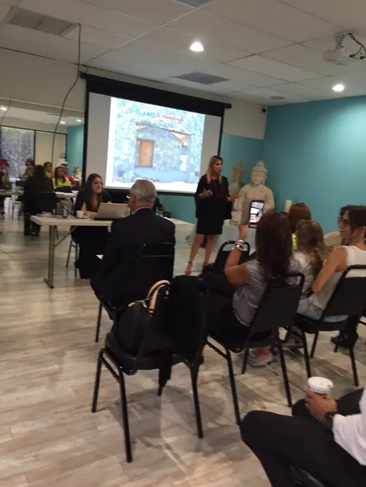
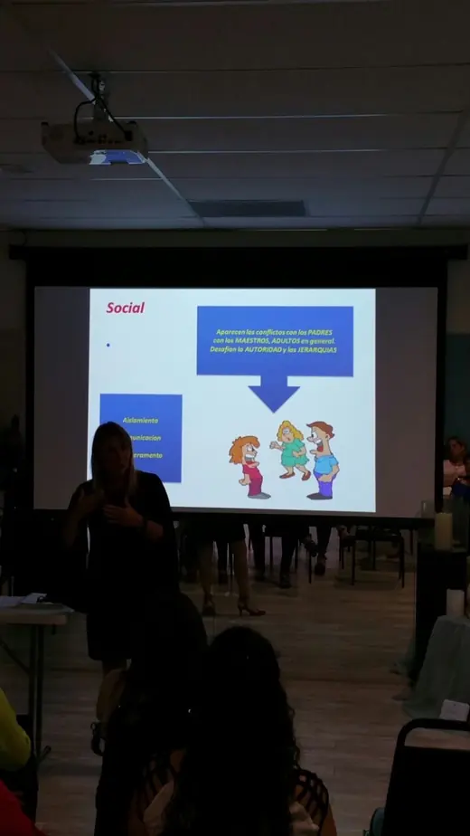
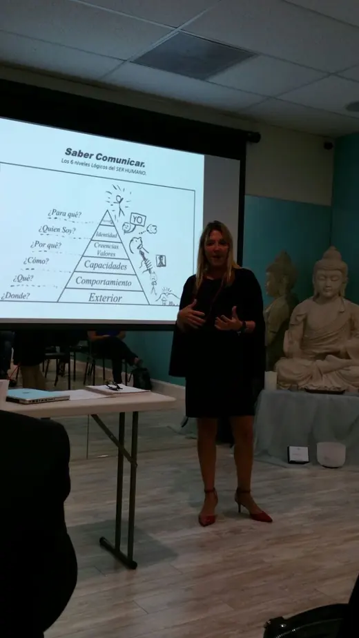
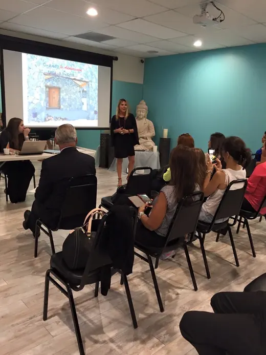
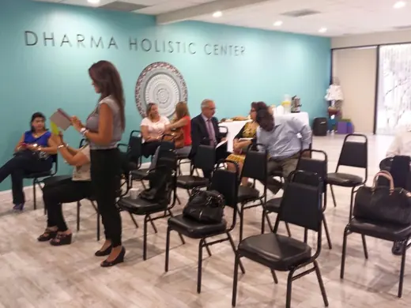
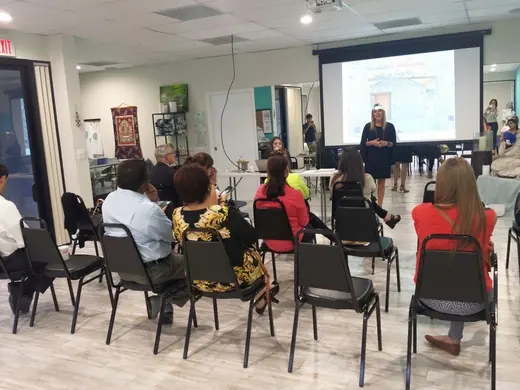
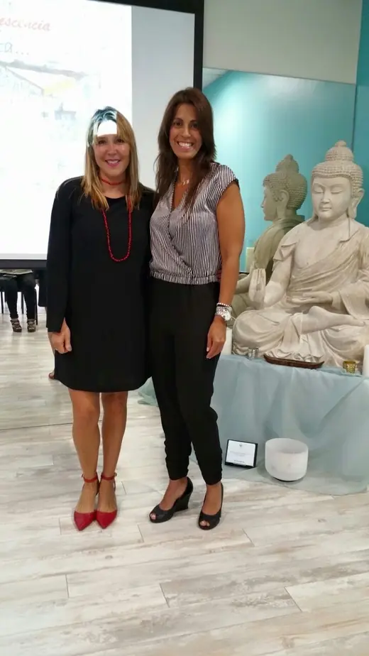


Estamos aquí para ayudarte.
Llámanos o escríbenos y te orientamos hacia el servicio y el profesional indicados para ti o tu familia.